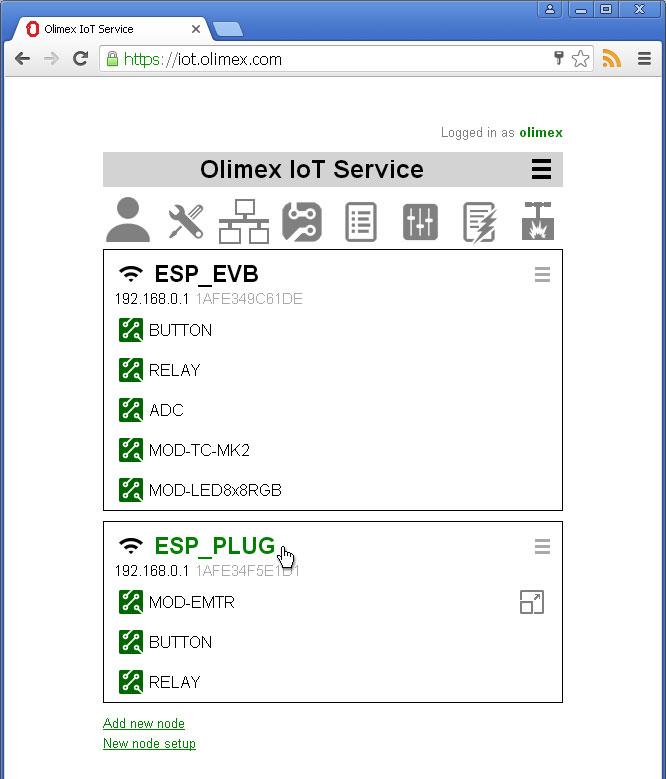
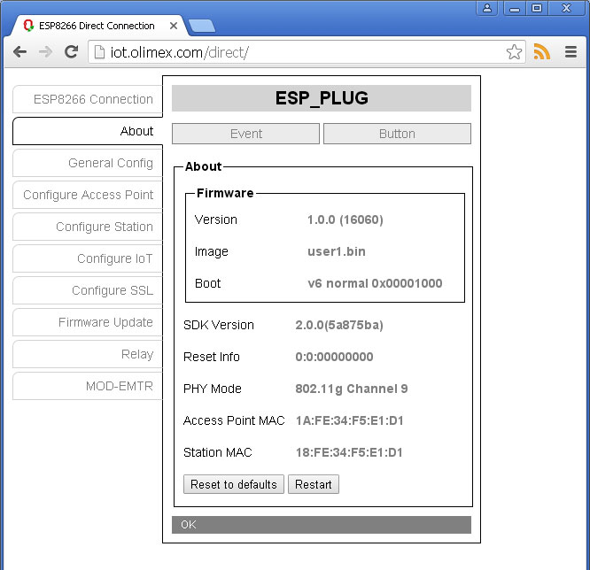
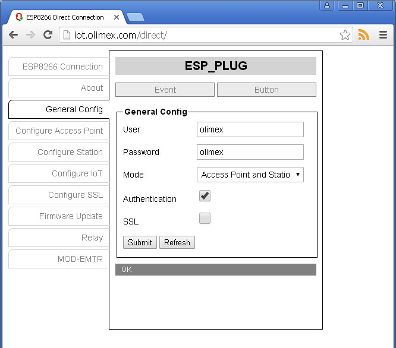

Back to OlimexIoT Help
Direct node connection gives you full control over IoT Node. You can change all settings, credentials and upload new versions of the firmware. Direct node connection is not always possible.
For example if you use our free OlimexIoT Service and you are outside your home network there is no way to direct connect to your nodes.
Direct node connection is implemented as HTML5 application located at http://iot.olimex.com/direct/
To direct connect to a node you can use node's Access point or Station IP address. Default address is set to 192.168.4.1 which is AP default address.
To connect using node's AP you have to be in the range of AP and
If you are using a mobile device you can use Add to Home screen in order to have the HTML5 application available even when you are not online.
After finishing your work with the node you may want to disconnect your device from node's AP and connect it back to your WiFi network.
Login to IoT Server. There are two ways to connect to your node using different IP addresses.
From main screen click on the name of the node. This is usable when your device the IoT Server and the node are in same network.
Note that in this case if there is NAT firewall or proxy server between the node and the IoT Server its address will be used and this will probably block the connection to the node.
Click on IP address from node's Station Info. This is usable when your device and the node are in same network.
Note that this case internal network address of the node will be used and this will work only if you are in the same network with the node.
If connection is successful system information about the node will be displayed. From this screen you can restart the node or reset all settings to factory defaults.
Here you can change the User and the Password used when connecting to the node. You can set Mode in which node operates: Access Point, Station or both. If Authentication check box is unchecked you can connect without user and password. If SSL check box is checked only SSL connections will be accepted.
Here you can configure node's Access Point.
Here you can configure node's Station i.e. credentials for your existing WiFi network to which node will connect. If you are using DHCP you and the node is connected you can see node's IP address.
Here you can configure connection to IoT Server
Here you can upload your private key and certificate used for direct SSL connections.
Here you can update boot loader or firmware.
All other tabs are for discovered devices.
Back to OlimexIoT Help